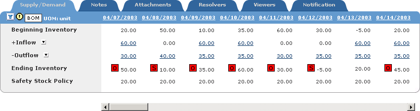
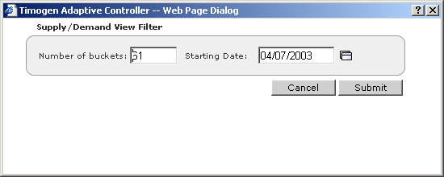

Changing Buckets for a Supply/Demand View
If the number of buckets for a supply/demand view in an alert doesn't provide enough information (or provides too much), you can change the number of buckets for that alert. You can also change the start date for the view.
To change the
buckets for a
supply/demand
view
1 View the detail page of the alert that contains the supply/demand information you
want to view. (See "Viewing Alerts".)
2 In the tabbed section at the bottom of the page (you may have to scroll down to see
the tabbed section), click the Supply/Demand tab.

3 Click  . The Supply/Demand View Filter dialog box appears.
. The Supply/Demand View Filter dialog box appears.
. The Supply/Demand View Filter dialog box appears.
Note: You can hover the mouse pointer over to see the current bucket number
and start date settings for the view.
to see the current bucket number
and start date settings for the view.
The default values in the dialog box are the current values for the view.
4 Enter the new bucket information:
· Enter a number in the Number of Buckets field
· Enter a date in the format MM/DD/YYYY in the Starting Date field.
You can also click  to select a date from the Calendar picker.
to select a date from the Calendar picker.
· Select a new location (Event Alerts only).
5 Click Submit. The page refreshes with the updated bucket information.
Any changes made here to the bucket information are only temporary: once you leave the alert page or the Supply/Demand tab, the bucket information will revert back to its default values.